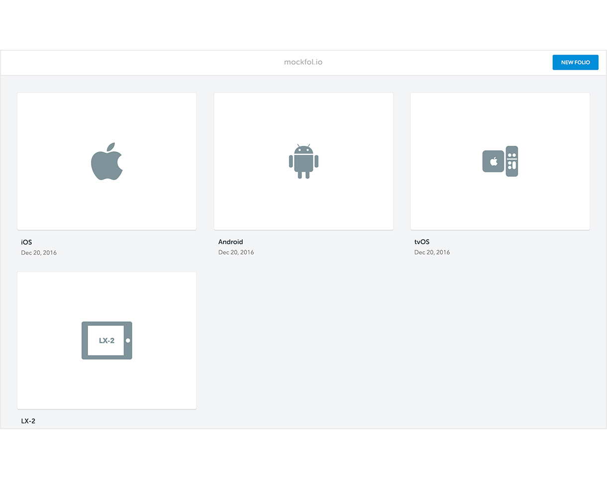
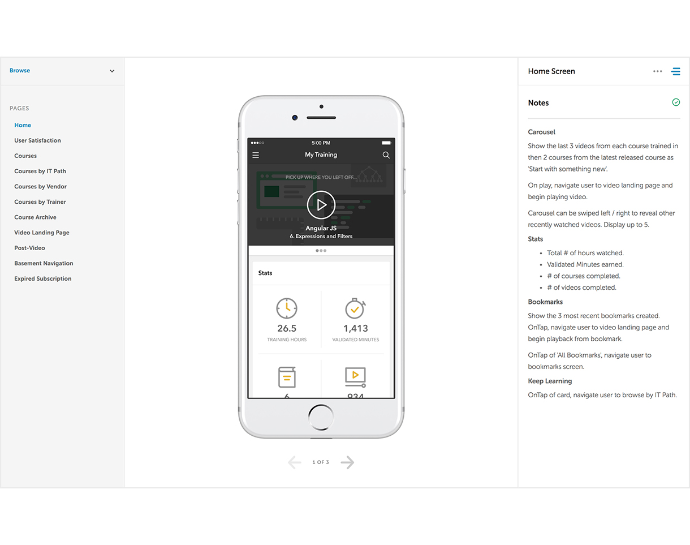
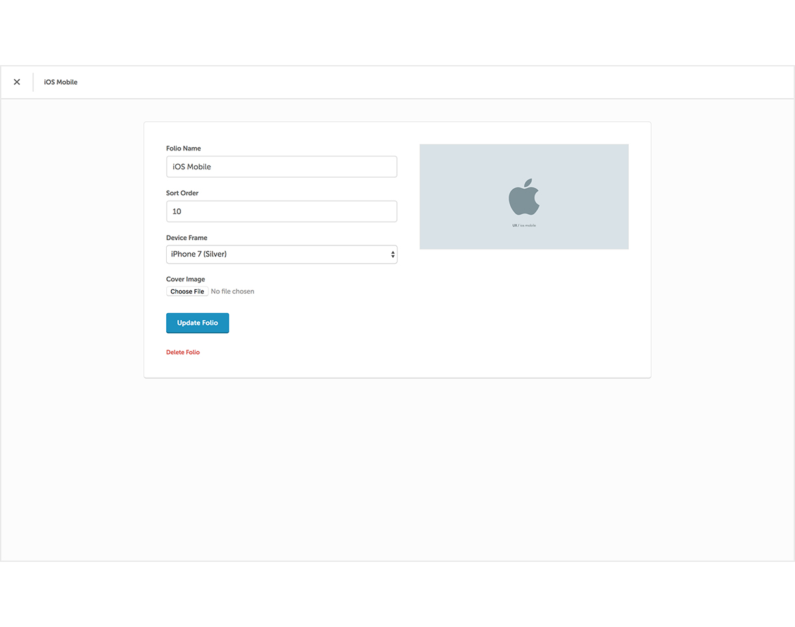
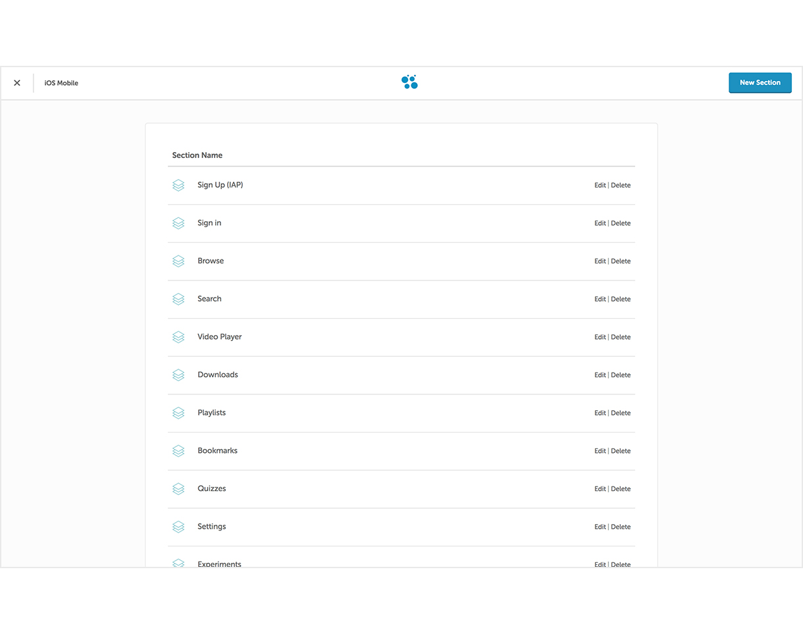
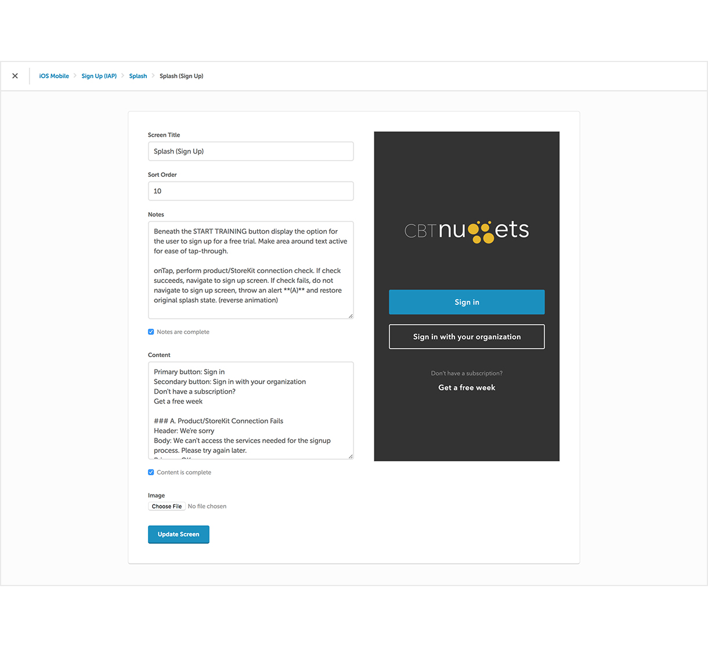

chriseddie.com / Mockfol.io
chriseddie.com / Mockfol.io
Mockfol.io
Mockfol.io is a personal project created out of the need for a better way to share design work with others. While working for a company as a remote designer, I needed an easy way to present designs to stakeholders without physically being present and a solution for cataloging design specifications without creating bloated PDFs.
I designed this project and coded it using HTML/CSS and Ruby on Rails.

The dashboard contains "folios" for each project.
Each project is organized into sections, pages, and screens. A section can have many pages and a page can have many screens. Each screen has a notes section where specific details about the design, behaviors, and functionality are listed. Designers can link directly to each screen from an external source, making it handy to reference a design in a Slack conversation or an email.

Inside a project folio.
A simple backend was set up to manage projects. When creating a new folio, designers can assign one of many hardware device frames to house their design.

Project settings backend.
Adding and updating sections, pages and screens is done through the simple backend editor.

Displaying project sections in the backend editor.
When creating a screen, designers can add detailed annotations or notes and writers can add copy to a separate content section. Designs are uploaded and stored using an Amazon S3 service.

Screen editor.
Date: December 2016 - Present
Company: Arboreal, LLC
Project: Mockfol.io
Role: Design / Development